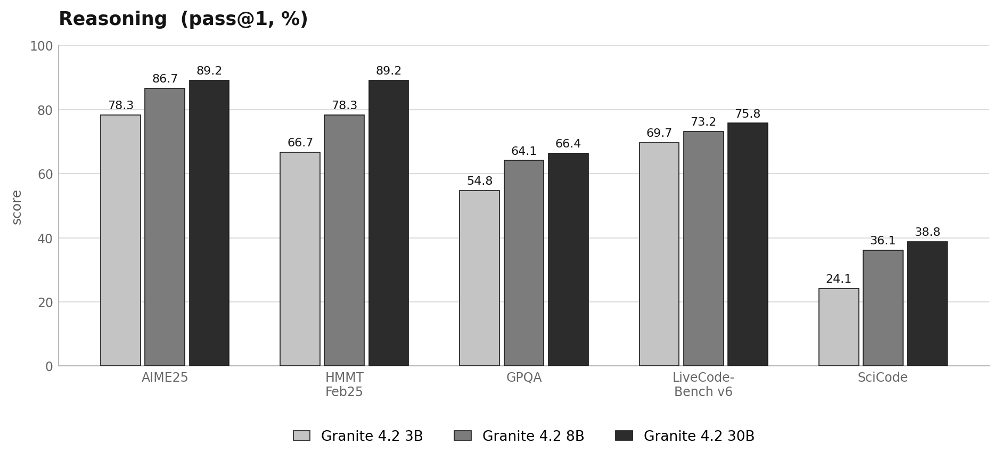

07 Hugging Face 게시일 2026.08.25
IBM Granite 4.2, 512K 문맥과 도구 호출 담았다
IBM은 Granite 4.2를 단순 출시 소식이 아니라 제작 보고서 형태로 공개했다. 그래서 이 글의 중심은 성능표보다 설계와 학습 절차다. 엔터프라이즈 관점에서는 어떤 데이터와 단계로 모델을 만들었는지, 어떤 라이선스로 배포하는지가 중요하다. 이 모델군은 그 정보를 비교적 많이 공개했다.
핵심 브리핑
Granite 4.2는 추론에 초점을 맞춘 오픈 모델군이다. IBM은 이 모델을 3B, 8B, 30B 세 크기로 냈다. 세 모델 모두 Apache 2.0 라이선스를 쓴다. 기업이 자체 환경에 넣어 시험하기 쉬운 조건이다.
세 모델은 공통으로 디코더 전용 밀집 트랜스포머 구조를 쓴다. 사전학습은 처음부터 다시 진행했다. 학습량은 약 15조 토큰이다. 학습은 5단계로 나뉘고, 마지막 단계에서 문맥 창을 51만 2000토큰까지 늘렸다.
이후 SFT와 다단계 강화학습을 거쳤다. SFT 데이터는 약 720만 샘플, 약 1000억 토큰 규모다. 이 가운데 학습 가능한 토큰은 약 650억이다. 데이터 비중은 에이전트형 31.6%, 비에이전트형 68.4%다.
8B와 30B는 에이전트형 강화학습을 한 번 더 받았다. IBM은 이 단계에서 도구 호출, 코드 수정과 실행, 터미널 조작, 웹 검색 같은 작업을 실제 샌드박스 환경에서 익히게 했다고 설명했다. 모든 모델은 생각 모드, 비생각 모드, 낮은 노력 모드를 지원한다. OpenAI 호환 엔드포인트로 제공하면 함수 호출 형식도 맞출 수 있다.
- 모델 크기: 3B, 8B, 30B
- 사전학습량: 약 15조 토큰
- 문맥 창: 51만 2000토큰
- SFT 데이터: 약 720만 샘플, 약 1000억 토큰
- 라이선스: Apache 2.0
- 에이전트형 강화학습: 8B, 30B만 적용


스펙과 도입 조건
도입 조건은 비교적 선명하다. 라이선스는 Apache 2.0이다. 엔드포인트는 OpenAI 호환 형식을 지원한다. vLLM 예시가 있고, SGLang도 지원한다고 IBM이 밝혔다.
긴 문맥과 도구 호출은 장점이지만 운영비도 함께 본다. 51만 2000토큰 문맥은 유용한 반면, 메모리와 지연 시간을 함께 늘릴 수 있다. 제공된 발췌에는 권장 GPU나 실제 추론 비용이 없으므로, 내부 파일럿에서는 사용 패턴을 좁혀 측정해야 한다.
학습 데이터 관리 방식도 공개됐다. IBM은 서로 다른 데이터 소스를 OpenAI Chat 형식으로 통일했고, 품질 평가는 GPT-OSS-120B와 Gemma 4를 심사 모델로 써서 진행했다. 중복 제거는 tools와 messages 필드를 묶어 SHA-256 해시로 처리했다.
업계의 움직임
이번 글은 외부 반응보다 IBM이 학습 절차를 세세하게 공개한 점 자체가 업계 신호다. 오픈 모델 진영에서는 결과 수치만이 아니라 데이터 관리, 품질 통제, 강화학습 단계까지 설명하는 흐름이 이어지고 있다. 아직 공개된 고객 반응이나 도입 사례는 확인되지 않았다.
시사점과 체크포인트
우리 회사가 내부 지식 검색, 문서 요약, 운영 자동화에 오픈 모델을 붙인다면 Granite 4.2는 검토 대상이 될 수 있다. Apache 2.0은 법무 검토 부담을 낮춘다. OpenAI 호환 형식은 기존 애플리케이션 연결 비용도 줄일 수 있다.
다만 확인할 점이 있다.
- 인프라팀: 8B와 30B를 우리 GPU 자원으로 감당할 수 있는지
- 보안팀: 도구 호출과 터미널 기능을 어떤 샌드박스에 가둘지
- 데이터팀: 긴 문맥이 실제 업무 이득으로 이어지는지
- 모델리스크팀: 생각 모드 출력과 로그를 어떻게 저장·통제할지
IBM은 학습 절차를 자세히 설명했지만, 발췌에는 벤치마크 결과와 실제 비용 정보가 거의 없다. 따라서 도입 판단은 성능 검증과 운영비 측정을 붙여서 해야 한다.
주요 용어
원문 정보
제목: Granite 4.2 LLMs: How They're Built
게시일: 2026.08.25
출처 URL: https://huggingface.co/blog/ibm-granite/granite-4-2